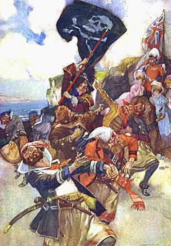

Gilbert and Sullivan Archive -- Pirates of Penzance Picture Gallery

Dance of the Pirates (end of Act I)
Watercolor by W. Russell Flint. One of eight watercolors by Mr. Flint illustrating Pirates of Penzance.
To
Pirates of Penzance Picture Gallery Index
To
Pirates of Penzance Home Page
Page created 4 July 2000